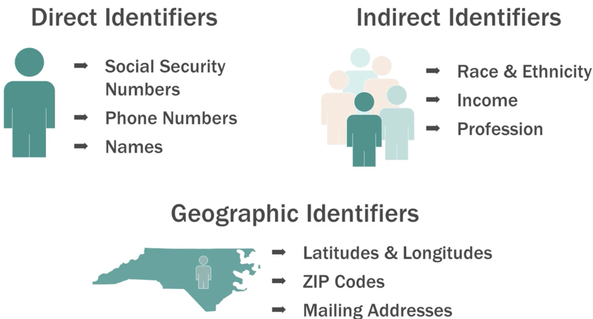

Sharing Datasets
LIS 4/5493: Data Stewardship
Introduction
Is Storing and Preserving Data the Same?
Henderson, M. (2017). Best practices for working with research data. In Data management: A practical guide for librarians, p. 28.
How to Determine What to Keep (Appraisal)
- There may be different factors to consider depending on whether or not a data management or data curation perspective is taken
- There may be disciplinary differences about what is necessary to keep and what can be disposed AND how long data should be kept
- The nature of the data, how it was gathered or developed, and its future use may be drivers considered during appraisal.
Some Key Questions to Ask (Management)
Relevance to the mission of the institution
Legal requirement to keep the data
Uniqueness of the data objects or dataset
Scientific or historical value
Potential for re-use
Non-replicability and cost to repeat the research if data is lost
Future economic benefits
Documentation and description included and interoperable with repository
Some Key Questions to Ask (Curation)
- Are there legal restrictions for keeping the data (data protection or freedom of information acts)?
- Can the project continue without the data?
- What is the potential re-use value?
- What are the consequences for not keeping the data?
- Can the institution support the long term storage of the data?
- How long do we keep the data and what are the costs of doing so (technology, mission of organization, and user requirements?
Where is Data Published?
In a journal’s digital library or repository (if available)
On the academic researcher’s website
In the institutional repository of the university
In a discipline-specific repository
In an open science repository
In a private company repository (in non-academic contexts)
Criteria for Choosing a Repository
- Is the repository reliable and stable?
- Are others in the discipline using the repository?
- Are the security practices clear and appropriate for the types of data being stored?
- What are the terms of use and rights and licensing agreements?
- Are the policies for deposit clear?
- Does the repository have policies for citations and use of DOI?
- Is the repository discoverable by major search engines?
- Does the repository follow standards?
- What is the cost of storing data?
- Are there necessary policies related to all aspects of depositing and removing data?
Key Stakeholders in Data Sharing
Benefits of Sharing Data
Reinforces open scientific inquiry
Supports the verification and replication of original results
Promotes new research and allows for the testing of new or alternative methods
Encourages collaborations and multiple perspectives
Provides important teaching resources
Reduces costs by avoiding duplicate data collection efforts
Protects against faulty or fraudulent data
Enhances the visibility and overall impact of research projects
Preserves data for future use
Helps the broader community and individual researchers “do better research”
Challenges to Share Data
- It takes time and effort to make data shareable
- Perceived risks from loss of control of data the data
- Data contain confidential or sensitive information
- Ownership of data may be unclear or problematic
- A lack of incentives for sharing data

Data Citation
Data Citation provides a standardized method for secondary users to cite data
Protecting Confidentiality
